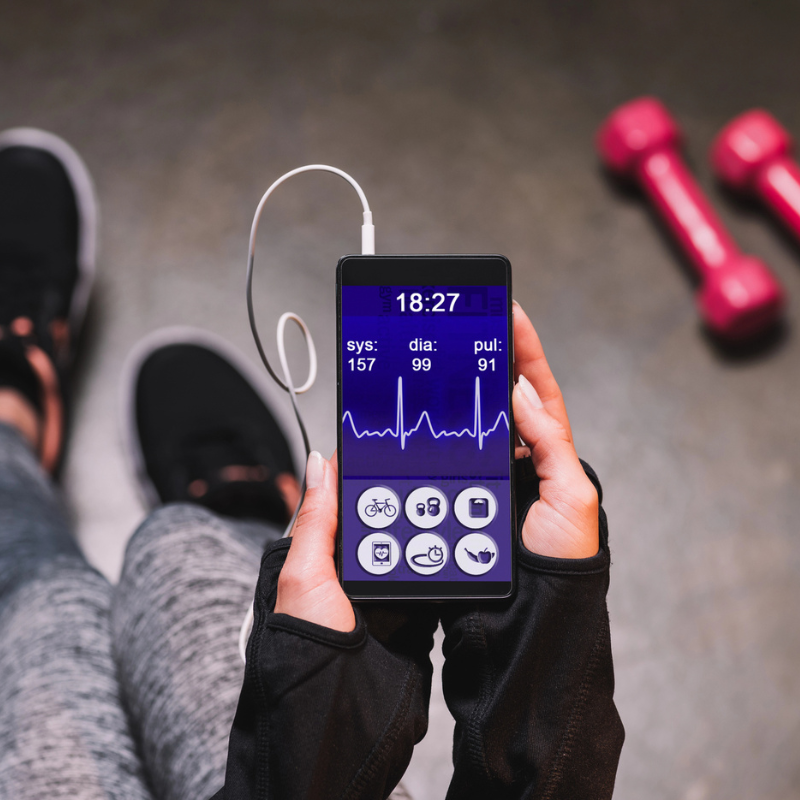
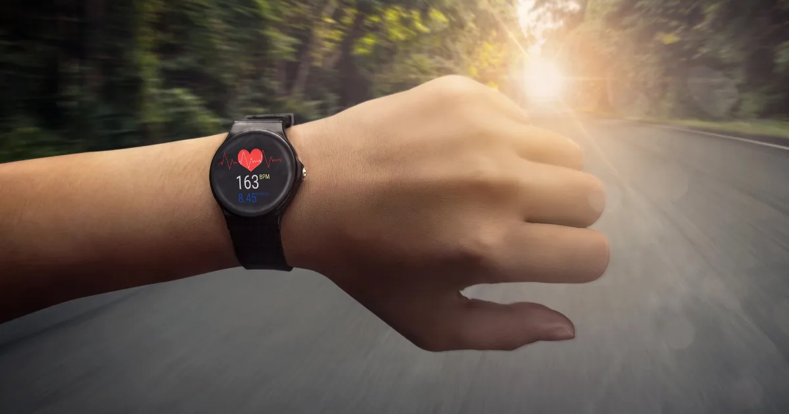

Tepová frekvence pro spalování tuků
Možná jste slyšeli, že pro spalování tuků musíte cvičit v určité „zóně" tepové frekvence. Není to úplně tak jednoduché, jak se často prezentuje – ale je na tom zrnko pravdy. Pochopení tepových zón vám pomůže trénovat efektivněji a dosahovat lepších výsledků při hubnutí.
V tomto článku si vysvětlíme, jak tepová frekvence souvisí se spalováním tuků, jak si ji vypočítat a jak ji využít v praxi – ať už chodíte, běháte, nebo cvičíte v posilovně.

Jak tepová frekvence ovlivňuje spalování
Vaše tělo spaluje energii vždy – otázka je, z jakého zdroje. Při nízké intenzitě cvičení tělo čerpá energii převážně z tuků. S rostoucí intenzitou se zvyšuje podíl energie ze sacharidů (glykogenu). Ale pozor: to neznamená, že pomalé cvičení je na hubnutí lepší než intenzivní.
Klíčový rozdíl: podíl vs. celkové množství
Při nízké intenzitě spalujete vyšší podíl tuku, ale nižší celkové množství kalorií. Při vyšší intenzitě je podíl tuku nižší, ale celkový kalorický výdej je výrazně vyšší. Pro hubnutí rozhoduje celkový kalorický výdej, ne podíl tuku.
| Intenzita | Podíl tuku | Celkové kcal/h | kcal z tuku/h |
|---|---|---|---|
| Nízká (50 % max TF) | 60 % | 300 | 180 |
| Střední (65 % max TF) | 50 % | 500 | 250 |
| Vysoká (80 % max TF) | 35 % | 700 | 245 |
Jak vidíte, při střední intenzitě spalujete nejvíce tuku v absolutních číslech. Ale i vysoká intenzita přináší skvělé výsledky – a navíc po intenzivním tréninku spalujete zvýšeně ještě několik hodin (tzv. afterburn efekt).
Jak vypočítat ideální tepovou frekvenci
Krok 1: Maximální tepová frekvence
Nejjednodušší vzorec je:
Maximální TF = 220 − věk
Příklad: 40letý člověk → max TF = 220 − 40 = 180 tepů/min
Přesnější vzorec (Tanaka): 208 − (0,7 × věk). Pro 40letého: 208 − 28 = 180 tepů/min.
Krok 2: Zóna pro spalování tuků
Ideální tepová frekvence pro spalování tuků leží v rozmezí 60–70 % maximální TF. Pro celkové hubnutí je optimální zóna 65–75 %.
Příklad pro 40letou osobu (max TF = 180):
Spalování tuků: 180 × 0,60 až 180 × 0,70 = 108–126 tepů/min
Optimální hubnutí: 180 × 0,65 až 180 × 0,75 = 117–135 tepů/min

Přehled tepových zón
| Zóna | % max TF | Využití |
|---|---|---|
| Zóna 1 – Regenerace | 50–60 % | Aktivní odpočinek, rozcvičení |
| Zóna 2 – Spalování tuků | 60–70 % | Dlouhé tréninky, chůze, lehký běh |
| Zóna 3 – Aerobní | 70–80 % | Zlepšování kondice, běh, kolo |
| Zóna 4 – Anaerobní | 80–90 % | Intervalový trénink, HIIT |
| Zóna 5 – Maximum | 90–100 % | Krátkodobé sprinty |
Jak tepové zóny využít v praxi
Pro začátečníky
Pokud teprve začínáte cvičit, zaměřte se na Zónu 2 (60–70 %). To odpovídá svižné chůzi nebo lehkému klusu. V této zóně dokážete cvičit dlouho, nebolí to a spalujete přitom efektivně tuky. Ideální aktivitou je rychlá chůze.
Pro pokročilé
Kombinujte zóny pomocí intervalového tréninku: 2–3 minuty v Zóně 3 (70–80 %), pak 1 minuta v Zóně 4 (80–90 %). Opakujte 6–8×. Tento přístup spaluje více kalorií celkově a vyvolává afterburn efekt.
Jak měřit tepovou frekvenci
- Hrudní pás – nejpřesnější metoda. Polar, Garmin, Wahoo.
- Sportovní hodinky s optickým senzorem – pohodlné, ale méně přesné při vysoké intenzitě. Apple Watch, Garmin, Fitbit.
- Ruční měření – přiložte dva prsty na krční tepnu, počítejte tepy 15 sekund a vynásobte 4.
Jednoduchý test bez měření
Pokud nemáte hodinky ani pás, použijte talk test:
- Zóna 2 – dokážete mluvit v celých větách
- Zóna 3 – mluvíte po kratších úsecích, občas se zadýcháte
- Zóna 4 – dokážete říct jen pár slov mezi nádechy
Mýty o tepové frekvenci a hubnutí
Mýtus 1: „Musíte cvičit v zóně spalování tuků"
Ne nutně. Pro hubnutí je důležitý celkový kalorický deficit, ne to, jestli spalujete tuky nebo cukry. Intenzivnější trénink spaluje více kalorií celkově – a tedy přispívá k hubnutí více.
Mýtus 2: „Tep nesmí být moc vysoký"
Vysoký tep při cvičení není nebezpečný (pokud jste zdraví). Intervalový trénink v Zóně 4 je bezpečný a vysoce efektivní. Pokud ale máte srdeční onemocnění, poraďte se s kardiologem.
Mýtus 3: „Při vysokém tepu spalujete jen cukry"
Spalujete obojí – jen se mění poměr. A po intenzivním tréninku tělo dobíjí zásoby glykogenu právě z tuků. Celková energetická bilance za 24 hodin je to, co rozhoduje.
Další mýty o hubnutí a BMI najdete v článku Jak snížit BMI. A pokud hledáte sport s optimální tepovou frekvencí pro hubnutí, podívejte se na nejlepší sporty na hubnutí.
Shrnutí
- Ideální tepová frekvence pro spalování tuků: 60–70 % maximální TF
- Pro celkové hubnutí je optimální: 65–75 % maximální TF
- Maximální TF = 220 − věk
- Pro hubnutí rozhoduje celkový kalorický výdej, ne jen podíl spalovaných tuků
- Kombinace zón (intervalový trénink) přináší nejlepší výsledky
- Nejlepší trénink je ten, který děláte pravidelně
Spočítejte si BMI a nastavte si tréninkový plán podle svých cílů.